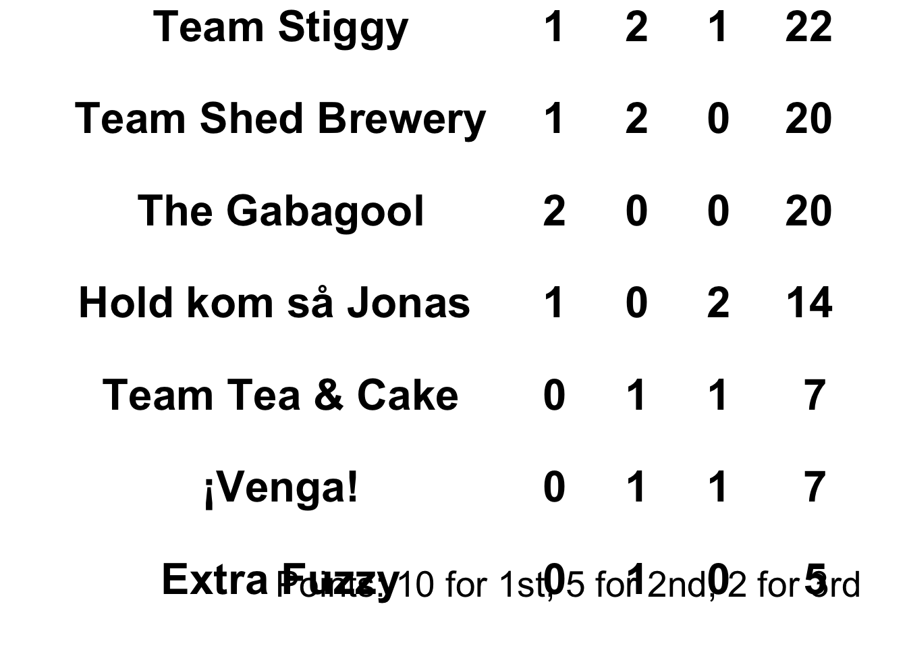

library(data.table)
library (tidyverse)## ── Attaching core tidyverse packages ──────────── tidyverse 2.0.0 ──
## ✔ dplyr 1.1.4 ✔ readr 2.1.5
## ✔ forcats 1.0.0 ✔ stringr 1.5.1
## ✔ ggplot2 3.5.2 ✔ tibble 3.3.0
## ✔ lubridate 1.9.4 ✔ tidyr 1.3.1
## ✔ purrr 1.1.0
## ── Conflicts ────────────────────────────── tidyverse_conflicts() ──
## ✖ dplyr::between() masks data.table::between()
## ✖ dplyr::filter() masks stats::filter()
## ✖ dplyr::first() masks data.table::first()
## ✖ lubridate::hour() masks data.table::hour()
## ✖ lubridate::isoweek() masks data.table::isoweek()
## ✖ dplyr::lag() masks stats::lag()
## ✖ dplyr::last() masks data.table::last()
## ✖ lubridate::mday() masks data.table::mday()
## ✖ lubridate::minute() masks data.table::minute()
## ✖ lubridate::month() masks data.table::month()
## ✖ lubridate::quarter() masks data.table::quarter()
## ✖ lubridate::second() masks data.table::second()
## ✖ purrr::transpose() masks data.table::transpose()
## ✖ lubridate::wday() masks data.table::wday()
## ✖ lubridate::week() masks data.table::week()
## ✖ lubridate::yday() masks data.table::yday()
## ✖ lubridate::year() masks data.table::year()
## ℹ Use the conflicted package (<http://conflicted.r-lib.org/>) to force all conflicts to become errorslibrary(readxl)
library(gridExtra)##
## Attaching package: 'gridExtra'
##
## The following object is masked from 'package:dplyr':
##
## combinelibrary(grid)
library(gtable)route<-fread("/Users/jonathanderry/Documents/Home/Cycling/Vuelta_2025/route.txt")
date<-Sys.Date()
Stage<-route %>% dplyr::filter(Date==date) %>% pull(Details) %>% toupper()
course<-route %>% dplyr::filter(Date==date) %>% pull(Start.and.Finish) %>% gsub("Vuelta 2024 route stage", "", .)
results<-fread("/Users/jonathanderry/Documents/Home/Cycling/Vuelta_2025/2025_Results/stage-9_combined_results_upto2025-08-31.txt")
stages<-unique(results$Stage_no)
final<-data.frame()
for (i in 1:length(stages)){
stage<-stages[i]
temp<-results %>% as.data.frame() %>% dplyr::filter(Stage_no == stages[i]) %>% dplyr::group_by(Team.x) %>% dplyr::arrange(total_seconds, Rank) %>% slice_head(n=3) %>% ungroup() %>% dplyr::group_by(Team.x) %>% summarise(Overall_Time=sum(total_seconds), top3_rank=mean(Rank))
All_Rank=results %>% as.data.frame() %>% dplyr::filter(Stage_no == stages[i]) %>% dplyr::group_by(Team.x) %>% dplyr::arrange(total_seconds, Rank) %>% ungroup() %>% dplyr::group_by(Team.x) %>% summarise( all_rank=mean(Rank, na.rm=T))
temp2<-merge(temp, All_Rank, by="Team.x") %>% dplyr::arrange(Overall_Time, top3_rank, all_rank) %>% mutate(Stage=stage, Position=c("1st", "2nd", "3rd", "4th", "5th", "6th", "7th", "8th", "9th", "10th", "11th", "12th", "13th", "14th"))
final<-rbind(temp2, final)
}
podiums<-final %>% dplyr::group_by(Position, Team.x) %>% tally() %>% dplyr::filter(Position %in% c("1st", "2nd", "3rd")) %>% pivot_wider(names_from = "Position", values_from = "n", id_cols = "Team.x")
missing<-data.frame(Team.x=setdiff(unique(final$Team.x), podiums$Team.x), `1st`=NA, `2nd`=NA, `3rd`=NA)
colnames(missing)=colnames(podiums)
podiums<-rbind(podiums, missing)
podiums[is.na(podiums)]<-0
podiums$Score<-podiums$`1st`*10 + podiums$`2nd`*5 + podiums$`3rd`*2
podiums<-podiums %>% dplyr::arrange(-Score) %>% rename(Team=Team.x)
cols <- matrix("black", nrow(podiums), ncol(podiums))
cols[1,1:ncol(podiums)] <- c("seagreen")
cols2<-matrix("white", nrow(podiums), ncol(podiums))
t <- tableGrob(podiums, rows=NULL, theme = ttheme_default(colhead = list(fg_params = list(rot = 90,cex = 2)), core = list(fg_params = list(cex = 2, col = cols, fontface="bold" ), bg_params=list(fill=cols2)), padding = unit(c(10, 12), "mm")))
title<-textGrob(paste( "Points Competition Standings after ", toupper(Stage),sep=" "), gp = gpar(fontsize = 20, fontface = "bold"))
t <- gtable_add_rows(t, heights = grobHeight(title) + unit(20, "mm"), pos = 0)
t<- gtable_add_grob(t, title, t = 1, l = 1, r = ncol(t))
caption_text <- textGrob("Points: 10 for 1st, 5 for 2nd, 2 for 3rd\n",
gp = gpar(fontsize = 20),
hjust = 1, x=0.95) # Adjust justification and position as needed
t<-grid.arrange(t, caption_text,
ncol = 1,
heights = unit.c(unit(1, "npc") - grobHeight(caption_text),
grobHeight(caption_text)))
ggsave(paste("/Users/jonathanderry/Documents/Home/Cycling/Vuelta_2025/2025_Results/", Stage, "_overall_points_table_after_", Stage,"_", Sys.Date(),".jpg", sep=""),t, height=15, width=12, dpi=1000, units="in", bg = "white")
ggsave(paste("/Users/jonathanderry/Documents/Home/Cycling/Vuelta_2025/2025_Results/current_points.jpg", sep=""),t, height=15, width=12, dpi=1000, units="in", bg = "white")